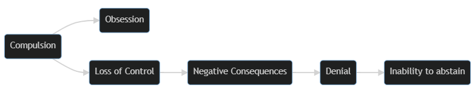
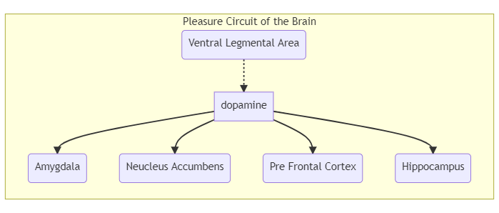

Terms
-
Addiction
-
Physiological
Dependence
-
Tolerance
-
Withdrawal
-
Physiological
Dependence
What Is Addiciton?
Common Characteristics of Addiction
Although the mechanism is not well understood, all forms of addiction
probably reflect dysfunction of certain biochemical systems in the
brain.

- Compulsion: An excessive preoccupation
(characterised by obsession) with a behaviour and an
overwhelming need to engage in an activity.
- Loss of Control: An inability to realistically
estimate the consequences (healthy or damaging) of a particular
behaviour.
- Negative consequences: physical damage, legal
trouble, financial problems, academic failure or family
dissolution.
- Denial: inability to perceive that a behaviour is
self-destructive
- Inability to Abstain
Harmful Use
Defined as harm being caused to the health of the person, such as
hepatitis (in the case of intravenous drug use) or a mood disorder
(secondary to the use of alcohol)
Dependence Syndrome
A dependence syndrome is a cluster of physiological, behavioural and
cognitive phenomena in which the use of a substance takes on a much
higher priority than other behaviours that once had greater value for
the individual.
This syndrome can also be referred to as the frequently strong, or
overpowering desire to take substance(s)
Addiction Effects Family and Friends
Family members of an addicted person often suffer from
codependence
Addictive Behaviours
Gambling Disorder
A set of behaviours including preoccupation with gambling,
unsuccessful efforts to cut back or quit, using gambling to escape
problems, and lying to family members to conceal the extent of
involvement with gambling.
Gambling Disorder is characterised by four distinct phases:
- Winning: Often beginning with a large win,
stimulating the reward sector of the brain, convincing the gambler that
they cannot lose.
- Losing: A gambler’s preoccupation ensues, in an
effort to recoup losses, interfering with work and family life.
- Desperate: Gamblers lost their ability to control
their behaviour, resorting to stealing or cheating to continue. Shame
and guilt are associated with this stage.
- Hopeless: The hope of quitting is abandoned, as
with the belief that help is available.
Gambling addiction has come to be viewed as a disorder of the
dopamine neurotransmitter system coupled with decreased blood flow to a
key section of the brain’s reward system. It is common for gamblers to
show evidence of tolerance and withdrawal, with access to gambling
increasing as a result of digital outlets for younger people.
Compulsive Buying Disorder
Characterised by excessive engagement in ‘retail therapy’ in an
effort to feel better. Signs of CBD can include the following:
- preoccupation with shopping and spending
- buying more than one of the same item
- shopping for longer than intended
- repeatedly buying much more than the person needs or can afford,
and
- buying that interferes with social activities or work and creates
financial problems.
- commonly results in conflict within couples and psychological
distress.
- Purchased goods are often useless or left unused.
Technology allows people with this affliction exposed through online
shopping (helping them avoid feeling shame or guilt), leaving their
addiction unchecked. (Technology allows them to continue behaviours from
the privacy of their own homes.)
Exercise Addiction
Warning signs of exercise addiction include:
- injuring and re-injuring the body through excess or lack of proper
rest
- difficulty concentrating
- feeling restless
- adhering to a rigid workout plan
- becoming fixated on burning calories or losing weight
- cancelling social plans
- skipping work
- missing class to exercise, or
- working out beyond the point of pain
Technology Addictions
Internet addicts typically exhibit symptoms such as:
- general disregard for their health
- sleep deprivation
- neglecting family and friends
- lack of physical activity
- euphoria when online
- low grades and/or poor job performance
- Feeling moody or uncomfortable when offline
- They may use their behaviour to compensate for loneliness, marital
or work problems, an unsatisfying social life, or financial
problems.
Work Addiction
Characterised by:
- excessive time spent working
- difficulty disengaging from work
- going above and beyond what the job calls for
- a compulsive work style
- high levels of stress
- low life satisfaction
- marital conflict, and
- work burnout
Work addicts may feel too busy to take care of their health, with
evidence of physiological effects such as:
- sleep problems and exhaustion
- high blood pressure
- anxiety and depression
- weight gain
- ulcers and chest pain, or
- more chronic health conditions such as heart disease and asthma
attacks
Work addiction is most commonly experienced by people in their 40s
and 50s, with males commonly more represented than females overall. This
addiction is also most common with people whose FOO was
dysfunctional.
Compulsive Sexual behaviour
People with compulsive sexual behaviour may participate in a wide
range of sexual activities, including:
- affairs
- sex with strangers
- prostitution
- voyeurism
- exhibitionism
- rape
- incest, or
- pedophilia.
Compulsive sexual behaviour can lead to loss of intimacy with loved
ones, family disintegration, and other related problems.
What Is A Drug?
Drugs are substances other than food that are intended to affect the
structure or function of the mind or the body through chemical action.
The potential for addiction is great for even the most therapeutic
substances, owing to their potent effects on the brain.
Scientists divide drugs into six categories:
- Prescription
- Can be obtained only with a prescription from a licensed health
practitioner.
- Over-the-counter (OTC)
- Are available without a prescription, to treat ailments such as
headaches or athlete’s foot
- Are generally available to prevent unnecessary healthcare visits or
prescriptions
- Recreational
- Used to help people relax or socialise
- Each category includes psychoactive drugs
- Tobacco, alcohol and caffeine are part of this group
- Herbal preparations
- Believed to have medicinal properties
- Include teas and other botanicals
- Illicit, and
- Generally recognised as harmful
- All are psychoactive
- Commercial.
- Perfumes, cosmetics, household cleaners, paints, glues, inks, dyes,
and pesticides
How Drugs Effect The Brain
Pleasure or Reward is a powerful biological force for survival
(eating, sleeping, sex), as well as leading us to want to repeat
pleasurable experiences.

The ‘pleasure circuit,’ (known as the mesolimbic dopamine system),
spans the:
- survival-oriented brain stem,
- the emotional limbic system (cingulate gyrus, thalamus,
hypothalamus, amygdala, hippocampus), and
- the thinking frontal cerebral cortex.
The use of almost all psychoactive drugs impacts this process by
either:
- mimicking (neurotransmitters are released in
greater number by a neuron)
- suppressing (the release of neurotransmitters into
the synaptic gap is blocked), or
- interfering (the reuptake of neurotransmitters is
blocked, allowing these chemicals to gather in the synaptic gap).
Routes of Drug Administration
- Oral Ingestion (Drugs taken orally may not reach the bloodstream for
as long as 30 minutes)
- Inhalation (Drugs that are inhaled and absorbed by the lungs travel
the most rapidly of all the routes of drug administration)
- Injection (intravenously: directly into the
bloodstream, intramuscularly: into a muscle, or
subcutaneously:just under the skin)
- Transdermal (nicotine patch)
- Suppositories (typically mixed with a waxy medium that melts at body
temperature, releasing the drug into the bloodstream.)
Drug Interactions
Polydrug use: taking several medications, vitamins,
recreational drugs, or illegal drugs simultaneously. Alcohol in
particular frequently has dangerous interactions with other drugs.
Hazardous interactions include:
- Synergism: (also called potentiation) is an
interaction of two or more drugs where the effects of the drugs are
multiplied beyond their singular effect. You might think of synergism as
2 + 2 = 10. A synergistic reaction can be very dangerous—even
deadly.
- Antagonism: Drugs work at the same receptor site,
and one drug blocks the action of the other (by occupying the receptor
site), altering the absorption rate and effect.
- Inhibition: The effects of one drug are eliminated
by the presence of another drug at the receptor site.
- Intolerance: drugs combine in the body to produce
extremely uncomfortable reactions. The drug Antabuse (which is used to
help alcoholics give up alcohol), works by producing this type of
interaction.
- Cross-Tolerance: occurs when a person develops a
physiological tolerance to one drug that also increases the body’s
tolerance to other substances that act similarly on the body.
Drug Misuse And Abuse